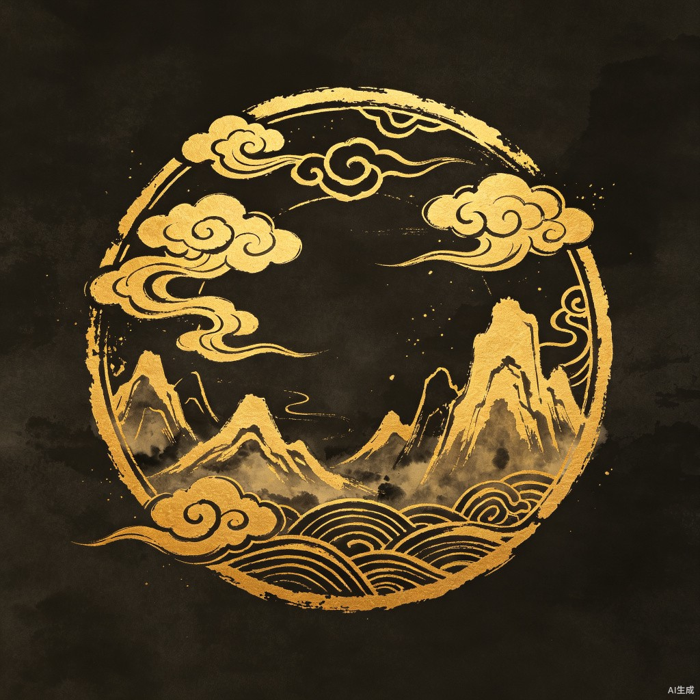

门派志
门派列表
已加入 1 / 8
逍
逍遥派
内门弟子 · 贡献 3200
少
少林寺
外家正宗 · 未加入
武
武当派
内家太极 · 未加入
峨
峨眉派
剑法灵动 · 未加入
华
华山派
剑气冲霄 · 未加入
丐
丐帮
降龙掌法 · 未加入
唐
唐门
暗器机关 · 未加入
全
全真教
先天功法 · 未加入

逍遥派
内门弟子逍遥自在，无拘无束。以逍遥游为心法根基，剑法轻灵飘逸，步法出神入化，内功深不可测。
逍遥
门派贡献度
3,200 / 5,000
距下一职位「核心弟子」还需 1,800 贡献度
门派技能树
已学 6 / 12逍遥剑法
已学 3 / 4
逍遥剑意
Lv.5
剑气纵横
Lv.3
万剑归宗
Lv.2
天外飞仙
可学习
凌波微步
已学 2 / 4
步法入门
Lv.4
踏雪无痕
Lv.3
飞花逐影
可学习
凌空虚渡
未解锁
北冥神功
已学 1 / 4
吐纳归元
Lv.3
北冥吸功
可学习
真气化海
未解锁
逍遥御风
未解锁
门派日常
每日 05:00 刷新
门派巡逻
进行中
巡视门派领地，驱逐入侵之敌
2 / 5
贡献 +200
传功解惑
进行中
指导门派新弟子修炼基础功法
1 / 3
贡献 +150
门派试炼
未开始
通过门派武学考核，证明实力
0 / 1
贡献 +500